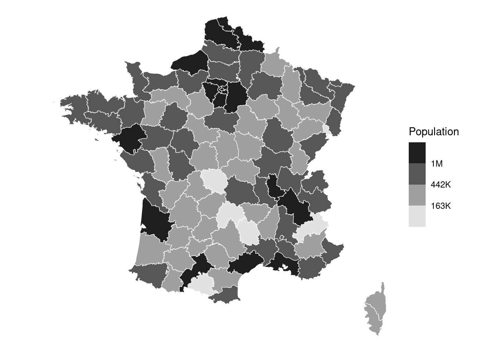
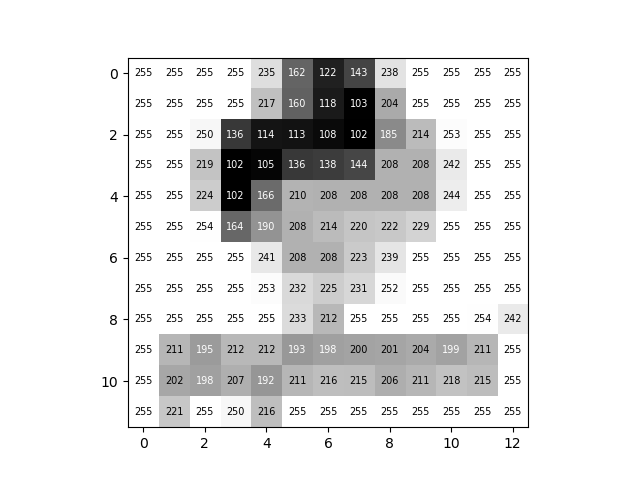
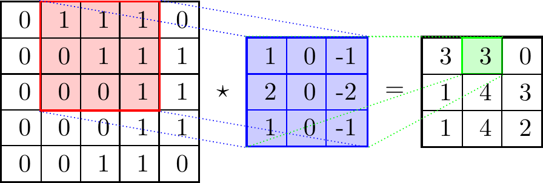
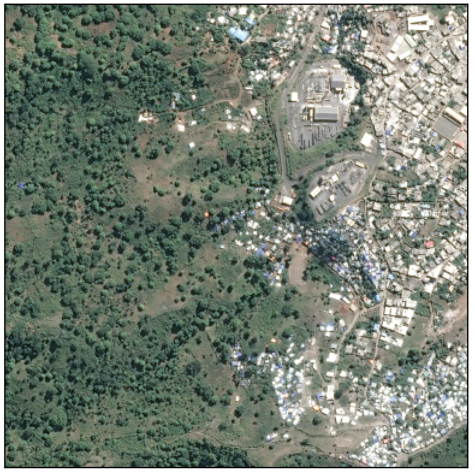
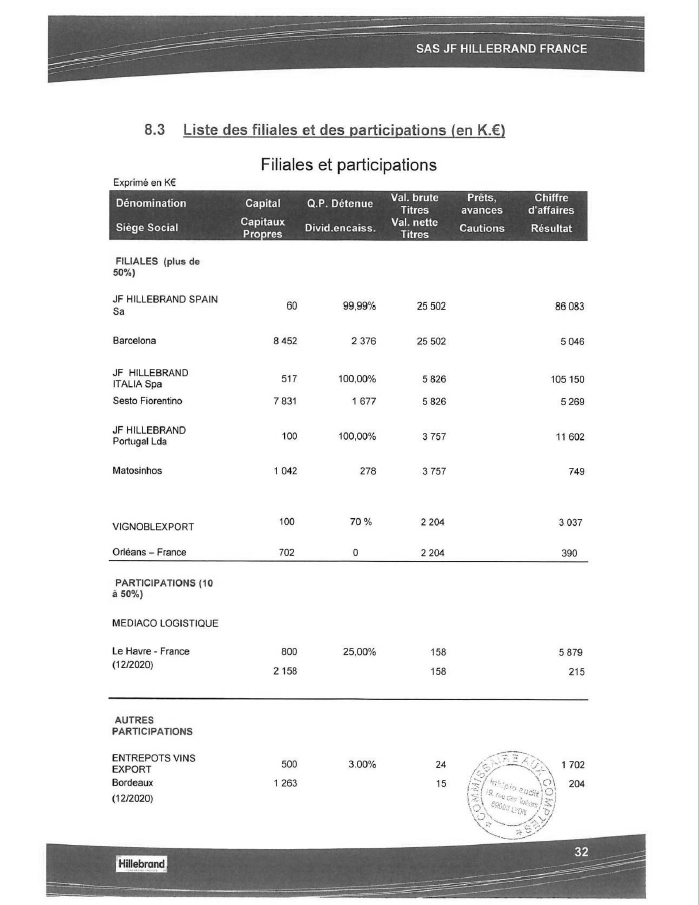
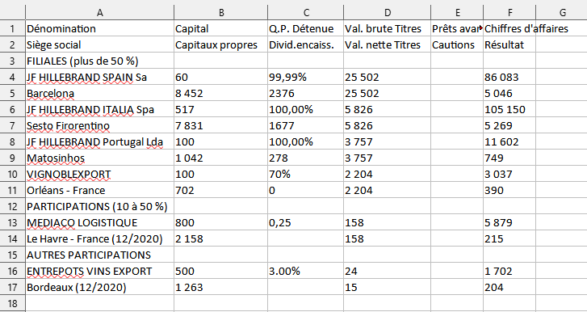

Nouvelles sources de données pour la statistique publique
Lino Galiana (Insee), Tom Seimandi (Insee)
Contexte
Prolifération des données
- Numérisation et innovations technologiques ont réduit le coût de production de la donnée ;
- Volume de données produites en explosion
- L’utilisation des statistiques n’est pas nouvelle (cf. Desrosières)…
Diversification des données
- Des données de nature très différentes:
- Données structurées classiques ;
- Données géolocalisées ;
- Données textuelles et non structurées ;
- Images, sons et vidéos.
- Besoin de nouvelles méthodes pour valoriser ces données :
- Machine learning (re)devenu un outil classique ;
- Réseaux de neurone pour les problèmes complexes (NLP, CV)…
Pourquoi le machine learning ?
- Meilleure prise en compte des non-linéarités que statistique paramétrique ;
- Simplicité à mise en oeuvre opérationnelle ;
- …
Diversification des données (1/4)
Données administratives
- Enregistrements automatisés de systèmes de gestion
- Données structurées sous forme de tableau

Diversification des données (1/4)
Données administratives
info_mutations == "Tableau" ? html`<div>${table_mutations1}<div>` : html`<div>${plot_mutations}<div>`url = "https://files.data.gouv.fr/geo-dvf/latest/csv/2020/communes/92/92049.csv"
proxy = "https://corsproxy.io/?"
dvf = d3.csv(proxy + url)table_mutations1 = Inputs.table(dvf, {"columns": ['date_mutation', 'valeur_fonciere', 'adresse_nom_voie']})
plot_mutations = Plot.plot({
y: {grid: true, label: "Nombre de transactions"},
x: {
ticks: 12,
transform: (d) => Math.pow(10, d),
type: "log",
tickFormat: "~s",
label: "Prix (échelle log) →"
},
marks: [
Plot.rectY(
dvf.filter(d => d.valeur_fonciere > 10000),
Plot.binX({y: "count"},
{
x: d => Math.log10(d.valeur_fonciere),
tip: true
})
),
Plot.ruleY([0])
]
})Exemple: les données DVF
Diversification des données (2/4)
Données géolocalisées
info_power_plants == "Tableau" ? html`<div>${table_power_plants}<div>` : html`<div>${plot_power_plants}<div>`import {us_power_plants, states} from "@observablehq/build-your-first-map-with-observable-plot"
table_power_plants = Inputs.table(
us_power_plants
)
plot_power_plants = Plot.plot({
projection: "albers-usa",
marks: [
Plot.geo(states, { fill: "white", stroke: "#e2e2e2" }),
Plot.dot(us_power_plants, {
x: "longitude",
y: "latitude",
r: "Total_MW",
fill: "PrimSource",
opacity: 0.7,
tip: true
}),
Plot.dot(us_power_plants, { // Can you figure out what this additional Plot.dot layer adds?
x: "longitude",
y: "latitude",
r: "Total_MW",
fill: "PrimSource",
stroke: "black",
filter: d => d.Total_MW > 3500,
}),
Plot.text(us_power_plants, { // Add text to the map using data from us_power_plants
x: "longitude", // Place text horizontally at plant longitude
y: "latitude", // Place text vertically at plant latitude
text: "Plant_Name", // The text that appears is the value from the Plant_Name column,
filter: (d) => d.Total_MW > 3500, // Only add text for plants with capacity exceeding 3500 MW
fontSize: 12, // Increased font size
fontWeight: 600, // Increased font weight
stroke: "white", // Adds white outer stroke to text (for readability)
fill: "black", // Text fill color
textAnchor: "start", // Left align text with the x- and y-coordinates
dx: 15 // Shifts text to the right (starting from left alignment with coordinate)
})
],
r: { range: [1, 15] },
color: { legend: true },
height: 500,
width: 800,
margin: 50
})Diversification des données (2/4)
Données géolocalisées
- Données tabulaires avec une dimension spatiale supplémentaire
- Dimension géographique prend des formes multiples:
- Points, lignes, polygones…
- et très bien outillés pour ces données
Diversification des données (3/4)
Données textuelles et non structurées
- Techniques statistiques anciennes (Levenshtein 1957, perceptron) ;
- Applications limitées jusqu’aux années 2010 ;
- Développement très rapide de la recherche :
- Collecte accrue : réseaux sociaux, enquêtes…
- Baisse coûts stockage & augmentation ressources traitement ;
- Nouvelles techniques statistiques: webscraping, LLM…
- Utilisation intensive dans l’administration, la recherche et le secteur privé
Diversification des données (3/4)
Données textuelles et non structurées
- Les LLM bien sûr…
- … Mais pas que !
d3.json(urlApe).then(res => {
var IC, results;
({ IC, ...results } = res);
IC = parseFloat(IC);
const rows = Object.values(results).map(obj => {
return `
<tr>
<td>${obj.code} | ${obj.libelle}</td>
<td>${obj.probabilite.toFixed(3)}</td>
</tr>
`;
}).join('');
const confidenceRow = `<tr>
<td colspan="2" style="text-align:left; "><em>Indice de confiance : ${IC.toFixed(3)}</em></td>
</tr>`;
const tableHTML = html`
<table>
<caption>
Prédiction de l'activité
</caption>
<tr>
<th style="text-align:center;">Libellé (NA2008)</th>
<th>Probabilité</th>
</tr>
${rows}
${confidenceRow}
</table>`;
// Now you can use the tableHTML as needed, for example, inserting it into the DOM.
// For example, assuming you have a container with the id "tableContainer":
return tableHTML;
});Diversification des données (4/4)
Images, sons et vidéos

Les données administratives
Contexte
- Baisse généralisée des taux de réponse aux enquêtes (Luiten, Hox, et Leeuw 2020; Beck et al. 2022)
- Enquête “Cadre de vie et sécurité”: 72% (2012) à 66% (2021).
- SRCV: 85% (2010) à 80% (2019)
- Données statistiques traditionnelles (sondage ou recensement) produites pour informer :
- Cette finalité guide la conception
- Mesurer le plus objectivement possible un phénomène cible
- Processus de réflexion en amont, échantillonnage ad hoc, post traitement…
- Numérisation a facilité l’automatisation des systèmes de gestion:
- Exploitation statistique ou recherche n’est pas la finalité initiale
- Finalité: enregistrement d’événements pour déclencher des actions (remboursement, paiement, etc.)
- Opportunité mais perte de contrôle dans la conception
Nature des données administratives
Aspect transactionnel
Donnée n’est stabilisée qu’après plusieurs cycles de gestion
- Continuité, au niveau de l’unité statistique, ne va pas de soi.
La collecte devient un processus vivant
- Données mises à jour à plusieurs échéances
- Structure du fichier de données évolue
- Nouveau crédit d’impôt = ajout d’une catégorie dans les déclarations fiscales
- -> changement du fichier de gestion
Nature des données administratives
Les déclarations administratives
- Pouvoir coercitif pouvant aller jusqu’aux poursuites judiciaires
- Réduit le risque de non-déclaration ou de déclaration faussée
- Information exhaustive et honnête sur la sous-population concernée par la donnée
Les déclarations administratives (Rivière 2018)
Obligation est faite à un certain nombre d’entités (individus, entreprises, organismes publics) de fournir des informations respectant une certaine forme, selon certaines modalités (internet, papier) et temporalités.
Par exemple, les déclarations fiscales des ménages sont annuelles, avec un calendrier déterminé à l’avance (qui dépend du format, papier ou internet).
Quelle différence avec les autres sources numériques ?
- Coût marginal faible
- Comme les “big data” !
- Différence principale: la population cible est connue
- Prérogatives légales obligent à identifier la population cible
- Donnée privée: population dépend de la part de marché (évolutive, biaisée)
- Donnée privée: Même quand population cible est large, risque de biais (âge, territoire…)
- Différence secondaire: la fréquence de collecte
- Généralement fréquence moindre des données administratives
- Mais certaines données quasi temps réel (SIVIC, SNDS, GIE CB…)
Aparté: les 5V s’appliquent aussi aux données administratives
MacKinsey définissait les propriétés du big data selon 5V:
- Volume: DSN > 1To de données par an ;
- Vélocité: Données assurance maladie ou GIE CB sont à haute fréquence ;
- Variété: l’État collecte et exploite des données de natures très différentes ;
- Véracité: erreurs (volontaires ou non) coûteuses permet des données de meilleure qualité que celles auto-déclarées sans contrôle ex-post ;
- Valeur: données collectées par l’État sont d’une grande valeur même si elles ne sont pas monétisées (bien public, sans valeur de marché mais avec une valeur sociale)
Une donnée plus sensible
- Enquête: réidentification après la phase d’anonymisation est compliquée
- Données administratives:
- Information moins précise…
- … mais réidentification facilitée en combinant plusieurs sources de données
- Champ de recherche: differential privacy
Le secret statistique (article 7bis de la loi de 1951)
Le secret statistique crée une obligation spéciale dans le cas de données confidentielles collectées, détenues ou produites pour des usages statistiques. Il interdit strictement la communication de données individuelles ou susceptibles d’identifier les personnes, issues de traitements à finalités statistiques, que ces traitements proviennent d’enquêtes ou de bases de données. En dérogation aux règles communes applicables au secret professionnel, le secret statistique est en effet opposable à toute réquisition judiciaire ou émanant d’autorités administratives (fiscale ou douanière par exemple).
Processus de production
- Place centrale d’une autorité gestionnaire, qui centralise la donnée
- distingué de l’administration qui exploite le flux (à des fins de gestion ou d’exploitation statistique).
| Donnée | Autorité centralisatrice |
|---|---|
| DSN | Gip-MDS |
| Données hospitalières | ATIH-10 |
| SI gestion des eaux | SANDRE12 |
Usage de la donnée administrative
- Usage à des fins de gestion (la finalité pour laquelle elles sont construites)
- Usage à des fins d’analyse (la finalité fortuite)
- Exploitation directe pour productions ou études
- Utilisation pour des appariements
Le CSNS
Code statistique non signifiant (CSNS) pour les besoins de mise en œuvre de traitements à finalité de statistique publique impliquant le numéro de sécurité sociale (NIR) ou des traits d’identité, en particulier les appariements au sein du Service statistique publique.
Exemple 1: la DSN
- Données issues des fiches de paie (Humbert-Bottin 2018)

Exemple 2: SIRENE
- Répertoire d’entreprises administré par l’Insee:
- Centralise de l’information sur 32 millions d’établissements.
- (dont 13 millions d’établissements actifs)
- Met à disposition des utilisateurs un code APE (pour activité principale exercée)
- Base de référence pour toutes les études et enquêtes statistiques sur les entreprises
Exemple 3: Fidéli
- Assemblage de :
- données d’origine fiscale: taxe d’habitation, fichier des propriétés bâties, déclarations de revenus, etc.
- données d’origine sociale: prestations, etc.
- données contextuelles sur le logement: nombre de pièces, etc.
- Base de référence pour études sociodémographiques fines
Exemple 4: le SNDS
- Appariement des grandes bases médico-administratives nationales, notamment :
- les données de l’assurance maladie (base SNIIRAM) ;
- les données des hôpitaux (base PMSI) ;
- les causes médicales de décès (base du CépiDC de l’Inserm).
- Flux massif:
- 1,2 milliards de feuilles de soins, 11 millions de séjours hospitaliers et 500 millions d’actes (plus de 3000 variables) qui représentent 450 To de données…
- Lien entre médecine de ville et médecine hospitalière
- Permet reconstruction du parcours de soin complet (EDP-Santé)
- Enjeu de confidentialité
Collecte de données
Webscraping (1/3)
- Webscraping: extraction du contenu de sites Internet
- Information textuelle très riche sur Internet, mobilisable à des fins de statistique publique
- Enjeux:
- Techniques: évolution des pages web, interactivité des sites
- Légaux: jurisprudences, directives de 2020 de la CNIL
- Bonnes pratiques:
robots.txt
Webscraping (2/3)
- En pratique:
Python:BeautifulSoup(parser),Scrapy(crawler)R:httr,rvest,politeSelenium: outils d’automatisation
- [Excellente formation] d’Antoine Palazzolo: https://inseefrlab.github.io/formation-webscraping/
Webscraping (3/3)
- Prix dans le domaine de l’hôtellerie: scraping du site Booking.com
- Vente d’articles électroniques:
- Scraping du site de la SNCF: collecte quotidienne pour capter la volatilité des prix
Utilisation d’API
- API: interface de programmation
- Mode préférentiel de collecte de données:
- Plus de garanties sur la qualité
- Reproductibité
- …
- Avec
Python:requests
Données géolocalisées
L’offre crée sa propre demande
- Généralisation de traces numériques géolocalisées:
- Multiplication des acteurs (production & exploitation)
- Données mobile, GPS, localisation d’adresses IP, géolocalisation d’adresses…
- Recherche et statistique publique:
- Intérêt ancien: enquêtes des sociologues du XIXe, école de Chicago (années 1920) mais données limitées
- Années 2010: quantification de masse de phénomènes
spatiauxsociaux: déplacements, lieux fréquentés… - Statistique publique s’adapte en publiant des données fines (données carroyées…)
Références
- Roth Camille. 2019. “Digital, Digitized, and Numerical Humanities.” Digital Scholarship in the Humanities
- Ash J, Kitchin R, Leszczynski A. 2018. “Digital turn, digital geographies ?” Progress in Human Geography
- Einav, L., & Levin, J. (2014). Economics in the age of big data. Science, 346(6210), 1243089.
Un enjeu ancien

Une des premières cartes statistiques (1798)
Un enjeu ancien

John Snow cartographie le choléra à Londres
Un enjeu ancien… et actuel


Un enjeu actuel

Carte des densités de population sur des carreaux de largeur d’un kilomètre à Lyon et ses alentours en 2017 (calculées à partir de Filosofi). Source : géoportail.
Voir geoportail, statistiques-locales.insee.fr ou France Pixel par Etienne Côme
Un enjeu actuel
Un exemple de visualisation express des données Filosofi grâce à la librairie gridviz (visible sur Observable)
Quels apports ?
- Calculer des indicateurs avec une granularité spatiale plus fine que les découpages administratifs ou historiques classiques.
- Etudes territoriales
- Aide pour les acteurs publics
- Source d’information de contexte pour tous les acteurs (publics & privés)
- Éclairer des phénomènes socio-économiques très locaux:
- Problématiques de mixité (Galiana, Sémécurbe, et al. 2020)
- Concentration immobilière liée au niveau de vie (André et Meslin 2021)
- …
- Réaliser des dataviz plus engageantes pour le public
- Carte: dataviz connue et compréhensible par un large spectre de publics
Exemple 1: données de téléphonie mobile
- Call Detail Records (CDR)
- Générés lors des communications actives d’un utilisateur à travers son téléphone mobile (appel, envoi de SMS, etc.);
- Données de signalisation passive:
- Issues des connexions data automatiques
- Collectées par les opérateurs principalement à des fins d’optimisation et de surveillance de leurs réseaux.
- Fréquence temporelle >> données CDR.
Exemple 1: données de téléphonie mobile (CDR)
- Statistiques intéressantes sur les populations présentes et les déplacements de la population.
- Galiana, Suarez-Castillo, et al. (2020): mouvements de population avant/après le confinement de 2020

Exemple 1: données de signalisation
- Article Journal of official statistics

Exemple 1: enjeux
- Questions sur la qualité : sous-champ de la population (clients d’un opérateur en particulier) donc biais de sélection à corriger pour s’assurer de la validité (partielle) des résultats;
- Questions sur la pérennité : l’Insee n’a donc aucun contrôle sur des possibles changements de format ou de méthode de collection des données. Pas de garantie que les indicateurs restent comparables au cours du temps.
- Questions d’éthique : avant d’utiliser ces données personnelles, il faut s’assurer que l’usage qui en est fait est proportionné et que la production statistique qui en résulte a une valeur ajoutée pour la population.
- Questions légales : aujourd’hui la législation européenne et son application dans la loi française ne sont pas favorables à l’utilisation de données téléphoniques de signalisation pour la statistique publique
Analyse textuelle
Introduction
- Le traitement automatique du texte et du langage est un des domaines de recherche les plus actifs en sciences des données
- Beaucoup d’applications potentielles pour la statistique publique:
- Données d’enquête
- Données administratives
- Données privées mobilisables pour la statistique publique
- Traitement automatique: fait référence à des tâches variées
Modèles de langage (1/5)
- Encoder l’information présente dans un texte:
- Matrice document-terme
- “La pratique du tricot et du crochet”
- “Transmettre la passion du timbre”
- “Vivre de sa passion”
| crochet | de | du | et | la | passion | pratique | sa | timbre | transmettre | tricot | vivre | |
|---|---|---|---|---|---|---|---|---|---|---|---|---|
| La pratique du tricot et du crochet | 1 | 0 | 2 | 1 | 1 | 0 | 1 | 0 | 0 | 0 | 1 | 0 |
| Transmettre sa passion du timbre | 0 | 0 | 1 | 0 | 0 | 1 | 0 | 1 | 1 | 1 | 0 | 0 |
| Vivre de sa passion | 0 | 1 | 0 | 0 | 0 | 1 | 0 | 1 | 0 | 0 | 0 | 1 |
Modèles de langage (2/5)
- Encoder l’information présente dans un texte:
- Extension de la matrice document-terme: **TF*IDF** (Term Frequency * Inverse Document Frequency)
- Forme très simple d’apprentissage
- Mais représentation sparse, fléau de la dimension
Modèles de langage (3/5)
- Text embeddings: représentation dense
- Exemple de word2vec

Modèles de langage (4/5)

Modèles de langage (5/5)
- Aujourd’hui, les meilleurs modèles de langage reposent sur une même architecture de réseaux de neurone: le Transformer
- Embeddings des mots qui composent un texte deviennent contextuels
- Explosion des modèle de langage génératifs
Applications pour la statistique publique
- Classification dans des nomenclatures:
- Profession (enquêtes, recensement de la population)
- **Activité des entreprises
- **Produits de consommation
- Appariements
- Extraction automatique de contenu au sein de documents textuels
- Modèles de langage génératifs: assistants de code, etc.
Analyse d’images
Représentation (1/2)
- Image en noir et blanc: matrice de dimension \(L \times W\)
- Plusieurs encodages possibles: valeurs entières entre 0 et 255 (
uint8), valeurs flottantes entre 0 et 1, etc.

Représentation (2/2)
- Image en couleurs: matrice de dimension \(L \times W \times 3\)
Vision par ordinateur (1/2)
- Techniques qui permettent à des machines d’acquérir une compréhension d’images ou de vidéos numériques
- 1973: détection de contours

Vision par ordinateur (2/2)
- On définit les images suivantes:
\[ G_x = \begin{bmatrix} +1 & 0 & -1\\ +2 & 0 & -2\\ +1 & 0 & -1 \end{bmatrix} \star A \quad \text{et} \quad G_y = \begin{bmatrix} +1 & +2 & +1\\ 0 & 0 & 0\\ -1 & -2 & -1 \end{bmatrix} \star A \]
avec \(\star\) l’opérateur de convolution 2-dimensionnel en traitement du signal
- Alors \(G = \sqrt{G_x^2 + G_y^2}\): représentation des contours de l’image \(A\)
Opérateur de convolution

Réseaux de neurones convolutifs

Segmentation sémantique, détection d’objets
Tâches classiques de vision
EO data (1/3)
- Données provenant de satellites, photographies prises depuis un avion, etc.
- Beaucoup de données ouvertes ou semi-ouvertes (NASA: Landsat, ESA: Sentinel, Airbus: Pleiades)
- Résolution spatiale variable (de haute: 10m, à très haute: 0.5m)
- Résolution spectrale variable
- Couverture régulière des territoires (par exemple tous les 5j pour Sentinel-2)
- Risques et difficultés: résultats robustes, disponibilité, temps de calcul, résolution adaptée
EO data (2/3)
- Cas d’usage potentiels multiples: supervision des forêts, de l’agriculture, des masses d’eau, supervision de l’urbanisation et des infrastructures, étude de la pollution environnementale, etc.
- Aujourd’hui:
- Calcul de statistiques sur l’occupation et l’usage des sols (consolidation de l’enquête Teruti)
- Consolidation des statistiques sur les vergers issues de l’enquête sur la structure des exploitations agricoles
- Mise à jour du répertoire de logements dans les DROM
EO data (3/3)


OCR et extraction (1/2)
- OCR: reconnaissance optique de caractères
- Documents scannés ou photographiés exploitables pour la statistique publique:
- Comptes annuels des entreprises
- Permis de construire
- Photographies de tickets de caisse pour l’enquête Budget de Famille
- Extraction d’information structurée: cas des tableaux
OCR et extraction (2/2)


Nowcasting
Introduction
- La statistique publique a pour rôle de publier et mettre à jour des séries temporelles harmonisées sur longues périodes
- Collecte et traitements prennent du temps: ces séries ont du retard
- Réalisation de prévisions à court/très court terme et même d’indicateurs prospectifs
- Nowcasting: modélisation de la situation macroéconomique actuelle ou très récente grâce à la collecte de signaux haute fréquence
Modèles
Données (1/2)
- Indicateurs de type soft: climat des affaires, sentiment des consommateurs
- Indicateurs hard: production industrielle, commerce de détail, prix de l’immobilier, etc.
- Données à différentes fréquences avec une disponibilité variable
Données (2/2)
- Statistiques de recherches sur Internet: Google Trends
- Données de réseaux sociaux: par exemple données de Twitter pour prévoir du comportement des marchés financiers et du marché du travail
- Risques: données très biaisées, difficiles à modéliser
Nowcasting à l’Insee (1/2)
- Chaire de recherche Mesures de l’économie, nowcasting ‐ au‐delà du PIB en 2021
- Travail sur l’amélioration des prévisions économiques grâce à la mobilisation de nouvelles données
- Actualités (Bortoli, Combes, et Renault 2018), médias sociaux, données satellitaires, réseaux professionnels et avis de consommateurs, données sur le commerce international, la consommation d’électricité et le transport routier (Fornaro 2020), le transport maritime, l’immobilier, l’hôtellerie et les télécommunications
- Nouveaux indicateurs économiques, de bien-être ou de développement durable
Nowcasting à l’Insee (2/2)
- Impact de la crise sanitaire du Covid-19 sur l’activité économique: données de transactions par cartes bancaires: chute d’un tiers pour la consommation
- Données de téléphonie mobile pour mesurer les déplacements de populations au moment des confinement et déconfinement (Galiana, Suarez-Castillo, et al. 2020)
Bibliographie
André, Mathias, et Olivier Meslin. 2021. « Et pour quelques appartements de plus : Étude de la propriété immobilière des ménages et du profil redistributif de la taxe foncière ».
Beck, François, Laura Castell, Stéphane Legleye, et Amandine Schreiber. 2022. « Le multimode dans les enquêtes auprès des ménages : une collecte modernisée, un processus complexifié ». Courrier des statistiques.
Bortoli, Clément, Stéphanie Combes, et Thomas Renault. 2018. « Nowcasting GDP Growth by Reading Newspapers ». Economie et Statistique / Economics and Statistics, Big Data et Statistics - Part 1, nᵒ 505-506: 17‑33. https://doi.org/10.24187/ecostat.2018.505d.1964.
Fornaro, Paolo. 2020. « Nowcasting Industrial Production Using Uncoventional Data Sources ». ETLA Working Papers 80. The Research Institute of the Finnish Economy. https://ideas.repec.org/p/rif/wpaper/80.html.
Galiana, Lino, François Sémécurbe, Benjamin Sakarovitch, et Zbigniew Smoreda. 2020. « Residential segregation, daytime segregation and spatial frictions: an analysis from mobile phone data ».
Galiana, Lino, Milena Suarez-Castillo, François Sémécurbe, Élise Coudin, et Marie-Pierre de Bellefon. 2020. « Retour partiel des mouvements de population avec le déconfinement ».
Hopp, Daniel. 2021. « Economic Nowcasting with Long Short-Term Memory Artificial Neural Networks (LSTM) ». arXiv. https://doi.org/10.48550/ARXIV.2106.08901.
Humbert-Bottin, Élisabeth. 2018. « La déclaration sociale nominative: nouvelle référence pour les échanges de données sociales des entreprises vers les administrations ». Courrier des statistiques.
Luiten, Annemieke, Joop Hox, et Edith de Leeuw. 2020. « Survey Nonresponse Trends and Fieldwork Effort in the 21st Century: Results of an International Study across Countries and Surveys ». Journal of Official Statistics 36 (3): 469‑87. https://doi.org/doi:10.2478/jos-2020-0025.
Rivière, Pascal. 2018. « Utiliser les déclarations administratives à des fins statistiques ». Courrier des statistiques.
Schumacher, Christian. 2016. « A comparison of MIDAS and bridge equations ». International Journal of Forecasting 32 (2): 257‑70. https://EconPapers.repec.org/RePEc:eee:intfor:v:32:y:2016:i:2:p:257-270.
Stock, James, et Mark Watson. 2010. « Dynamic Factor Models ». In Oxford Handbook of Economic Forecasting, édité par Michael P. Clements et David F. Henry. Oxford: Oxford University Press; Oxford University Press. http://www.economics.harvard.edu/faculty/stock/files/dfm_oup_4.pdf.